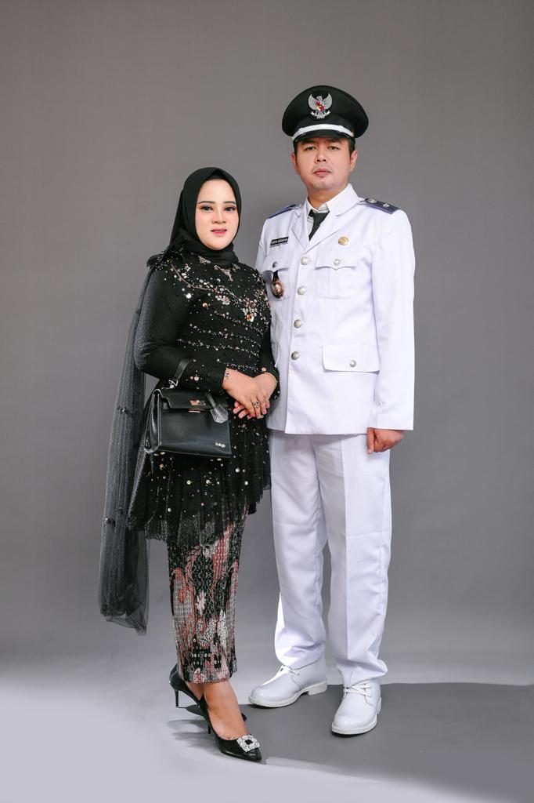

STRUKTUR PEMERINTAHAN
Desa Sendang Laok - Kecamatan Labang

AFRIZAL ADRIANSYAH
Kepala Desa Sendang Laok
Organisasi Desa
Struktur Pemerintahan Desa Sendang Laok
Diagram Struktur Organisasi
Berdasarkan Keputusan Kepala Desa Sendang Laok Nomor: 188/26/Kpts/2025
KEPALA DESA
AFRIZAL ADRIANSYAH
SEKRETARIS DESA
ANSORI
KAUR TU DAN UMUM
MOH. RUDI
KAUR KEUANGAN
MARIYAM
KAUR PERENCANAAN
MUKMIN
PELAKSANA TEKNIS
KASI PEMERINTAHAN
IMAM
KASI KESEJAHTERAAN
MUKMIN
KASI PELAYANAN
ARINI INDRAYANI
PELAKSANA KEWILAYAHAN
KADUS BILLEH
ABD. ROHIM
KADUS JABONG
KURNIAWATI
KADUS MORSABE
MUSTAIN
KADUS GALIS
ISLAHA
Detail Pemerintahan
Struktur Lengkap Pemerintahan Desa Sendang Laok
Kepala Desa
Nama: AFRIZAL ADRIANSYAH
Periode: 2024-2030
Tugas Pokok:
- Pemimpin tertinggi dalam struktur pemerintahan desa
- Pengambilan keputusan dan kebijakan strategis
- Pengawasan terhadap pelaksanaan program pembangunan
- Pelayanan masyarakat
Sekretaris Desa
Nama: ANSORI
Tugas Pokok:
- Penyelenggaraan administrasi desa
- Mendukung kelancaran tugas Kepala Desa
- Membawahi beberapa Kepala Urusan (Kaur)
KASI Pemerintahan
Nama: IMAM
Tugas Pokok:
- Perencanaan dan pelaksanaan kegiatan pemerintahan
- Pengelolaan administrasi kependudukan
- Koordinasi dengan lembaga kemasyarakatan
KASI Kesejahteraan
Nama: MUKMIN
Tugas Pokok:
- Program-program kesejahteraan sosial dan kesehatan
- Bantuan sosial
- Kesehatan masyarakat dan pendidikan
KASI Pelayanan
Nama: ARINI INDRAYANI
Tugas Pokok:
- Pelayanan kepada warga desa
- Pembuatan KTP, akta kelahiran
- Pelayanan administrasi lainnya
KAUR TU dan Umum
Nama: MOH. RUDI
Tugas Pokok:
- Urusan administrasi dan umum di desa
- Pengelolaan data dan dokumen penting desa
KAUR Keuangan
Nama: MARIYAM
Tugas Pokok:
- Pengelolaan keuangan desa
- Pembukuan dan laporan keuangan
- Anggaran dan belanja desa
KAUR Perencanaan
Nama: MUKMIN
Tugas Pokok:
- Perencanaan pembangunan desa
- Monitoring dan evaluasi program
- Penyusunan RPJMDes dan RKPDes
Pelaksana Kewilayahan
Kepala Dusun Desa Sendang Laok
Kepala Dusun Billeh
Nama: ABD. ROHIM
Tugas Pokok:
- Melaksanakan kebijakan desa di tingkat dusun
- Membantu Kepala Desa dalam koordinasi wilayah
- Penanganan masalah di tingkat dusun
- Mediasi konflik di tingkat dusun
Kepala Dusun Jabong
Nama: KURNIAWATI
Tugas Pokok:
- Melaksanakan kebijakan desa di tingkat dusun
- Membantu Kepala Desa dalam koordinasi wilayah
- Penanganan masalah di tingkat dusun
- Mediasi konflik di tingkat dusun
Kepala Dusun Morsabe
Nama: MUSTAIN
Tugas Pokok:
- Melaksanakan kebijakan desa di tingkat dusun
- Membantu Kepala Desa dalam koordinasi wilayah
- Penanganan masalah di tingkat dusun
- Mediasi konflik di tingkat dusun
Kepala Dusun Galis
Nama: ISLAHA
Tugas Pokok:
- Melaksanakan kebijakan desa di tingkat dusun
- Membantu Kepala Desa dalam koordinasi wilayah
- Penanganan masalah di tingkat dusun
- Mediasi konflik di tingkat dusun
Keterangan
Berdasarkan Keputusan Resmi
LAMPIRAN KEPUTUSAN KEPALA DESA SENDANG LAOK NOMOR: 188/26/Kpts/2025
TENTANG SUSUNAN PERANGKAT DESA SENDANG LAOK KECAMATAN LABANG KABUPATEN BANGKALAN
Kepala Desa Sendang Laok
AFRIZAL ADRIANSYAH